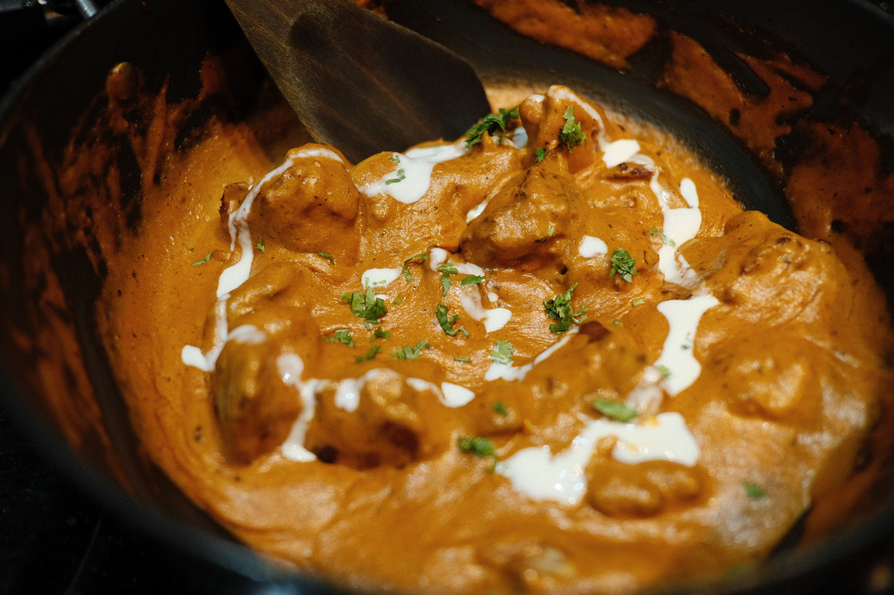

Odin Kitchen | Butter Chicken

Description
Butter chicken is a curry of chicken in a spiced tomato, butter and cream
sauce. It originated in the Indian subcontinent as a curry.
Ingredients
- 2 lb boneless, skinless chicken breast (910 g), cubed
- salt, to taste
- pepper, to taste
- 2 teaspoons chili powder, divided
- ½ teaspoon turmeric
- 6 tablespoons butter
- 1 ½ cups yellow onion (225 g)
- 3 teaspoons garam masala
- 1 teaspoon cumin
- 1 teaspoon cayenne pepper
- 1 tablespoon ginger, grated
- 3 cloves garlic, minced
- 1 cinnamon, 3 inch (8 cm) stick
- 14 oz tomato sauce (395 g)
- 1 cup water (240 mL)
- 1 cup heavy cream (240 mL)
- rice, for serving
- fresh cilantro, chopped for garnish
Steps
-
In a large bowl, season the chicken breast with salt, pepper, 1 teaspoon
of chili powder, and the teaspoon of turmeric. Let sit for 15 minutes to
marinate.
-
Melt 2 tablespoons of butter in a large pot over medium heat. Brown the
chicken, then remove from the pot.
-
Melt another 2 tablespoons of butter in the pot, then add the onion,
garam masala, remaining teaspoon of chili powder, the cumin, ginger,
garlic, cayenne, cinnamon, salt and pepper. Cook until fragrant.
- Add the tomato sauce and bring to a simmer.
- Add the water and cream and return to a simmer.
-
Return the chicken to the pot, cover, and simmer for another 10-15
minutes.
-
Stir in the last 2 tablespoons of butter and season with more salt and
pepper to taste.
- Serve the chicken over rice and garnish with cilantro.